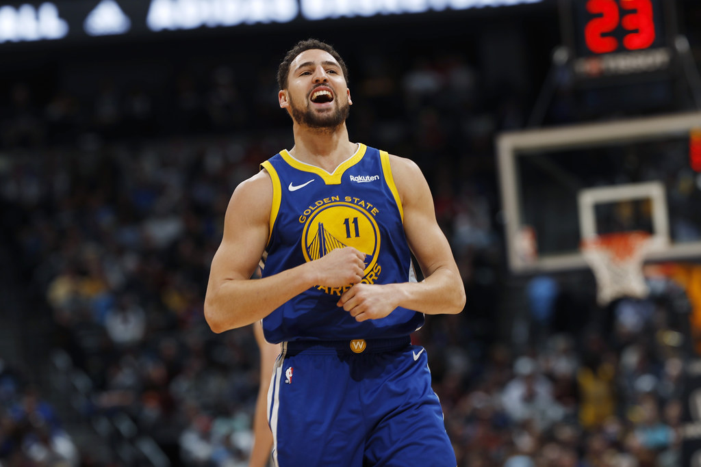
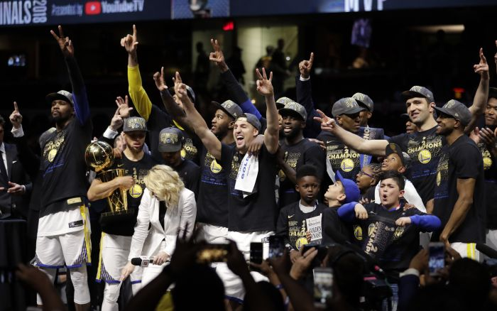

| 費城勇士（1946年-1962年） | 費城勇士於1946年由彼得·A·蒂勒爾創立，為美國籃球協會（ABA）其中一支創會球隊。勇士隊於首席射手喬·福爾克斯的帶領下，成功打敗芝加哥牡鹿取得1946-1947年賽季的總冠軍，也是美國籃球協會的第一屆冠軍。威爾特·張伯倫。 1950年代初，勇士隊簽下幾位傑出球員，包括保羅·阿里金、湯姆·古拉和尼爾·約翰斯頓，使勇士隊於1955-1956年賽季打敗韋恩堡活塞再一次取得總冠軍。1959年，勇士隊在NBA選秀選中了威爾特·張伯倫，令勇士隊實力一瞬千里。張伯倫更於1962年3月2日在對戰紐約尼克的比賽上建立個人單場100得分的里程碑。 |
Joe_Fulks 
Chamberlain 
Rick-Barry 
We Believe 
Stephen Curry 
Klay Thompson Draymond Green 
Three Champion  |
|---|---|---|
| 舊金山勇士（1962年-1971年） | 勇士隊於1962年遷至舊金山灣區，成為舊金山勇士（San Francisco Warriors），以舊金山南方與戴利市邊界的牛宮為主場（但勇士1964-1967以舊金山市內的比爾·格雷厄姆市政禮堂為主場），但有時勇士隊也在灣區其他城市如奧克蘭和聖荷西進行主場比賽。舊金山勇士贏得1963-1964年賽季西區分區的冠軍，但在NBA總決賽中以場數1：4敗敗給了波士頓塞爾提克。 1965年勇士隊在首輪NBA選秀選中了瑞克·貝瑞，貝瑞在他的第一年球季中被選為NBA「年度最佳新秀」，另外更帶領勇士隊進入1966-1967年賽季NBA總決賽，不過勇士隊以2：4敗敗給了在費城取代勇士隊的隊伍，費城76人。由於瑞克·貝瑞對管理階層未能給他一些他認為應得的獎金感到忿怒，貝瑞在整個1967-1968年賽季都沒有上場，更在次年加入NBA競爭對手美國籃球協會的奧克蘭橡樹隊。 1970-1971年賽季NBA重新分區，勇士隊被分至太平洋賽區，例行賽以41勝41負的成績排在分區第2名。勇士隊在新的西區半決賽中遭遇了密爾瓦基公鹿，最終1-4落敗。 | |
| 金州勇士（1971-至今） | 1971-1972年賽季開始，勇士隊改名為金州勇士（Golden State Warriors)。球隊離開舊金山，在奧克蘭進行絕大部份的主場比賽，沒有任何一場主場比賽於舊金山或戴利市舉行。但在那個球季中，有六場比賽的「主場」在於聖地牙哥舉行。 | |
瑞克·貝瑞時期瑞克·貝瑞在1975年獲選為NBA總決賽MVP。 瑞克·貝瑞在美國籃球協會 (ABA) 縱橫4年並拿下1969年總冠軍後，於1972年回到勇士隊。貝瑞在1975年總冠軍賽的瘋狂表現，帶領勇士橫掃華盛頓子彈拿下年度冠軍，也在2006年NBA60周年紀念排出的NBA季後賽60大好球中名列第49名。但金州勇士在1975年總冠軍賽的主場賽事卻不在季賽時的奧克蘭－阿拉米達郡競技場體育館舉行，而是在舊金山以南的戴利城的牛宮 (因為奧克蘭－阿拉米達競技館體育館已被Ice Follies冰上表演預定）。 勇士在1975年奪得冠軍後的兩個球季也持續進季後賽。1977-19871977-1978至1985-1986連續9個球季勇士都無緣季後賽，直到1986-1987年球季再次出現曙光，球隊任命喬治·科爾為總教練，帶領勇士隊再闖季後賽，並在第一輪上演讓二追三大逆轉擊敗了猶他爵士隊，但第二輪1比4不敵洛杉磯湖人隊。 |
||
Run TMC 時期勇士隊在1985選秀會以第七順位得到了克里斯·穆林，1988年選秀會以第五順位得到了米契·里奇蒙，他成為了當年的新人王，接著又在1989年選秀會球隊選到了提姆·哈德威，三位球員成為勇士隊新的基石，組成名震一時的Run TMC，但Run TMC 時的勇士隊頂多進入季後賽第二輪就出局，米契·里奇蒙在1990-1991年球季結束後被球隊交易。1991-1994為了補強禁區籃板能力，球隊將Run TMC 之一的米契·里奇蒙交易到沙加緬度國王換來比利·厄文斯。 雖然1991-1992球季，勇士創下當時隊史第二佳戰績的55勝27負成績，但季後賽第一輪1:3敗給西雅圖超音速。1992-1993年球季，勇士在季賽開始前的選秀選了後衛拉崔爾·史普利威爾，但勇士得分主力之一的克里斯·穆林因傷缺席大半個球季，同時球隊也多位球員因傷缺席，只打出34勝48負成績，無緣季後賽。1993-1994球季，球隊得分主力之一的提姆·哈德威因膝傷整季缺賽，但球隊及時簽下艾佛瑞·強森頂替。1993選秀，勇士得到克里斯·韋伯，在勇士第二年的後衛拉崔爾·史普利威爾得分能力明顯進步，之後克里斯·穆林也回歸隊上，勇士隊拿下50勝32負成績，以西區第六種子球隊打入季後賽，但季後賽第一輪被鳳凰城太陽3場橫掃出局。 |
||
連續12球季無緣季後賽時期（1994-2006）1994-1995球季，Chris Cohan成為勇士隊的新老闆，雖然勇士開季頭八場打出七勝一負的成績，但球隊上的年輕潛力球員克里斯·韋伯和教練唐·尼爾森關係惡劣，最終克里斯·韋伯逼勇士隊把自己交易到華盛頓子彈換來湯姆·古格里奧塔，但湯姆·古格里奧塔在只為勇士出賽40場後又被交易到明尼蘇達灰狼換來唐耶爾·馬歇爾，原球隊得分主力之一的克里斯·穆林也因傷缺席大半個球季，老尼爾森也因為戰績不佳而辭職（辭職時球隊成績14勝31負），1994-1995球季最終成績26勝56負，雖然成績不理想，但勇士卻因此得到1995年NBA選秀第一位的權力。1995-1996球季，勇士擁有1995年NBA選秀第一位選秀權力，勇士選了喬·史密斯，聘請曾經在1990和1992帶領波特蘭拓荒者打入冠軍賽的瑞克·阿德爾曼為教練。在1996年NBA全明星賽後曾經一度勇士有望站上西區第八種子的位置，但球隊交易了提姆·哈德威到邁阿密熱火換來比姆博·科爾斯和中鋒凱文·威利斯，但此交易無法幫助勇士站上西區第八種子的位置，最終勇士1995-1996球季成績36勝46負，以3場勝差無緣季後賽。 1996-1997球季因為奧克蘭體育館進行內部整修，整個球季勇士隊暫移到聖荷西體育館。球季開始前，勇士在1996年NBA選秀擁有第11位選秀權力，勇士選了中鋒托德·弗勒，也簽了替克利夫蘭騎士效力多年的傑出三分射手控衛馬克·普萊斯。但托德·弗勒最後並沒有成為能幫助球隊的球員，而馬克·普萊斯在1996-1997球季開始時已32歲，球隊另一個前得分主力克里斯·穆林也已33歲。雖然得分後衛拉崔爾·史普利威爾整年表現亮眼，平均一場24.2得分創下個人生涯最高平均得分成績，但在球隊青黃不接的情況下，1996-1997球季戰績退步，只有30勝52負。球季結束後瑞克·阿德爾曼教練被解僱。曾經是Run TMC之一的 克里斯·穆林，在1996-1997球季結束後也被球團交易掉。 1997-1998球季奧克蘭體育館為期一年的內部整修工程完工，金州勇士搬回奧克蘭體育館。勇士聘請曾經1992-1997擔任沙加緬度國王隊教練的蓋瑞·聖·吉恩擔任球隊總理，也換了新的隊徽和制服。勇士也找來1994-1997年期間執教波特蘭拓荒者隊的P·J·卡勒西莫為教練（兩次都是接替瑞克·阿德爾曼），季前選秀，勇士擁有第一輪第八順位選秀權，選了中鋒阿多納爾·福耶爾。球季開始的第一個月，勇士卻交出慘淡的1勝13負成績。在1勝13負慘淡開始後，又發生勇士得分後衛拉崔爾·史普利威爾的鎖喉事件。1997年12月1日的球隊練習時，教練P·J·卡勒西莫對著當時狀況不佳的史普利威爾喋喋不休的斥責，隨後兩人發生衝突。史普利威爾上前勒住P·J·卡勒西莫使其窒息長達15秒，如果隊友不即時阻止住史普利威爾可能會導致嚴重的傷害，甚至死亡。這一事件發生後，史普利威爾賽季中剩餘的68場比賽全數遭聯盟停賽。勇士在季中將1995年NBA選秀第一位選秀選的喬·史密斯和剛簽沒多久出生地是勇士隊球隊所在地奧克蘭的自由球員布萊恩·肖交易到費城76人，換來籃球浪人吉姆·傑克遜和克雷倫斯·韋瑟斯龐。 1997-1998球季勇士最終以19勝63的糟糕成績收場。 1998-1999的縮水球季，勇士在季前選秀獲得安東·傑米森，也將前一年鎖喉事件的拉崔爾·史普利威爾交易到紐約尼克， 換來約翰·史塔克斯，克里斯·米爾斯和泰瑞·卡明斯三名球員。勇士打出了差強人意的21勝29負成績，但還是無緣季後賽。 1999-2000的球季有如1997-1998球季的重演，開季頭兩個月，球隊成績是糟糕的6勝23負，勇士決定提前解僱教練P·J·卡勒西莫（被解僱時戰績是6勝21負），球隊經理蓋瑞·聖·吉恩擔任臨時教練到球季結束。最終戰績和1997-1998球季一樣都是19勝63負的糟糕戰績。勇士又聘請了曾經擔任過波士頓塞爾提克和夏洛特黃蜂教練戴夫·考文斯擔任新教練，但接下來的兩個球季都成為西區戰績墊底球隊（2000-2001球季戰績17勝65負，2001-2002球季戰績21勝61負），戴夫·考文斯在2001-2002球季執教23場後就被球隊解僱。雖然此時的金州勇士的糟糕墊底成績成為聯盟的笑話，但仍然有球員交出不錯的單人數據成績，勇士在季前選秀獲得的安東·傑米森2000-2001球季單場平均得分為24.9分，也創下曾經連續兩場比賽階得分51分的隊史記錄（安東·傑米森在勇士效力的5年平均一場得分20.2分）。勇士在2001年NBA選秀選入的後衛傑森·理察森在2002和2003NBA灌籃大賽連續兩屆拿下灌籃大賽冠軍頭銜。 2002-2003球季到2005-2006球季，雖然金州勇士成功的擺脫墊底球隊，但2002-2003球季到2005-2006球季這四年依然無緣季後賽。勇士在2003-2004年結束後讓曾經效力勇士多年也曾經是Run TMC 一員的 克里斯·穆林擔任球隊總理，取代選秀和自由球員簽約判斷力不佳的蓋瑞·聖·吉恩。2004-2005球季季中球員交易換來當時得分能力不錯的貝倫·戴維斯， 貝倫·戴維斯後來成為勇士之後重返季後賽"We Believe"時期的最重要的得分球員。 |
||
We Believe 時期2006-2007賽季勇士請回曾經1988-1995擔任勇士教練的老尼爾森擔任教練。季中勇士進行了重要的球員交易，將小麥克·鄧利維，特洛伊·墨菲，埃克·迪奧古交易到印第安納溜馬，換來史蒂芬·傑克森，艾爾·哈林頓，喬希·鮑威爾。金州勇士依靠跑轟戰術，在例行賽最後時刻爆發，最後10場比賽贏得9場，包括以5連勝結束例行賽。例行賽最後一場以120：98擊敗波特蘭拓荒者，以42勝40負的成績成為西區聯盟第八種子，自1993-1994球季以來再次進入NBA季後賽，在季後賽首輪遇上例行賽成績第一(67勝15負)的達拉斯小牛。 勇士111:86在第一輪第六戰完成「老八傳奇」，是繼1994年的丹佛金塊和1999年的紐約尼克後第三支達成此里程碑的球隊，同時小牛成為NBA史上第一支例行賽勝率最高卻在季後賽第一輪出局的球隊。勇士也成為2003年NBA首輪改為七戰四勝制後首支上演老八傳奇的球隊，亦是NBA歷史上第三支第八種子球隊晉級第二輪比賽，而勇士總教練老尼爾森亦擊敗了他的徒弟，小牛總教練艾佛瑞·強森。但勇士進入第二輪後不敵猶他爵士，1:4被淘汰。2007-2008季賽，金州勇士雖然季賽戰績比2006-2007賽季還多拿下6場勝利 （全季48勝34負），但由於2007-2008季賽西區競爭激烈，勇士無緣季後賽，也成為NBA史上季賽最多例行賽勝場（48勝）卻無緣季後賽的球隊。2007-2008季賽後球隊主要得分球星貝倫·戴維斯離隊。 在貝倫·戴維斯離隊後，勇士再次進入重建期，2008-2009球季，勇士戰績29勝53負。由於球隊重建進展不如預期，勇士決定不與球隊經理克里斯·穆林續約，球隊經理位置由賴瑞·賴利接任。勇士取得2009年NBA選秀第一輪第七位選秀權，勇士選了史蒂芬·柯瑞。 |
||
史蒂芬·柯瑞時期（2008-至今）2010夏季，勇士球團老闆換成喬·拉科布，勇士也和入選2010年NBA全明星賽的前紐約尼克球員大衛·李簽下6年合約。老尼爾森確定退休，勇士於2010-2011球季再次更改球隊隊徽和制服。馬克·傑克森執教（2011-2014）2011年勇士聘用馬克·傑克森為教練，勇士在2011年NBA選秀選了克雷·湯普森，球隊也決定將和史蒂芬·柯瑞位置重疊的蒙塔·艾利斯交易到密爾瓦基公鹿換來澳大利亞中鋒安德魯·波格特。馬克·傑克森執教的第二年成功重建球隊，再次打入季後賽。2012-2013季後賽第一輪，西區第六種子的勇士4:2擊敗被看好的丹佛金塊晉級季後賽第二輪，但不敵聖安東尼奧馬刺。2013-2014季賽勇士再次打入季後賽，和洛杉磯快艇展開飆分大戰，但最終勇士以3:4落敗。 馬克·傑克森執教勇士隊三季，累積例行賽戰績121勝109敗。首季執教為「縮水球季」，之後連續兩季帶領勇士隊打進季後賽，2013-2014季賽全季51勝31敗的戰績也是隊史自1991-92年球季之後的單季最佳戰績。 雖然馬克·傑克森教練連續兩年將球隊帶進季後賽，但由於球隊人士聘請問題，馬克·傑克森教練和球團老闆喬·拉科布發生嚴重爭執，最終在2014年5月6日馬克·傑克森教練被金州勇士隊解僱，由史蒂夫·科爾接手。勇士王朝（2014-2019）2014-2015年賽季，雖然大衛·李在季前賽受傷，但卓雷蒙·格林的防守表現填補了這空缺，勇士隊在新任教練史蒂夫·科爾和「浪花兄弟」的帶領下，例行賽以隊史最佳的67勝15敗拿下西區第一種子，在整個西區季後賽都有主場優勢。浪花兄弟中的史蒂芬·柯瑞更榮獲2014-15賽季例行賽NBA最有價值球員，是自1960年威爾特·張伯倫以來首位勇士球員贏得年度NBA MVP。到了季後賽，勇士在季後賽首輪直落四橫掃紐奧良鵜鶘，接著以四勝二負順利淘汰曼菲斯灰熊，繼1976年以來首度晉級西區決賽。勇士在西區決賽以四勝一敗擊敗詹姆士·哈登帶領的休士頓火箭，自1975年來首度晉級NBA總冠軍賽。總冠軍戰，勇士雖然起初以1:2落後雷霸龍·詹姆士率領的騎士，因為把握到騎士隊中有凱文·洛夫和凱里·厄文因傷缺陣，最終以4:2奪下2015年總冠軍。冠軍賽最有價值球員為安崔·伊古達拉，其對詹姆士的防守以及關鍵時刻的搶分使他獲得該殊榮，同時成為NBA有史以來第一位在82場例行賽皆非隊中先發卻得到冠軍賽MVP的球員。 卓雷蒙·格林於2015-2016年賽季入選NBA年度第二隊。2015年7月27日，大衛·李因失去先發大前鋒位置，被勇士交易至波士頓塞爾提克，換回傑拉德·華勒斯和克里斯·巴柏；勇士此舉是為了節省開支。 勇士由代理總教練盧克·華頓帶領開季，因總教練史蒂夫·科爾仍在治療於2015年總冠軍賽復發的背部舊傷。勇士以開季24連勝開始2015-2016年賽季，打破休士頓火箭於1993-94年球季及華盛頓國會於1948-49年球季締造的開季15連勝紀錄，也以開季客場14連勝打破紐約尼克於1969-70年創造的紀錄，一直到12月12日敗給密爾瓦基公鹿勇士才吞下首敗。勇士也以跨季28連勝超越2012-13年球季的邁阿密熱火，成為NBA史上第二長的季賽連勝紀錄。 2016年2月27日，勇士擊敗雷霆，確定收下季後賽門票。但在八天後的3月7日，勇士於客場95比112爆冷不敵湖人，創下了NBA歷史上最大勝率差逆襲紀錄，雙方的勝率分別是19%及91.7%（至少出賽50場）。隔天3月8日，勇士回到主場以119比113擊敗奧蘭多魔術，跨季主場45連勝，打破芝加哥公牛於1995至96年締造的跨季44連勝。3月31日，勇士客場103比96逆轉擊敗爵士，收下賽季第68勝，打破隊史紀錄。4月2日，勇士主場106比109不敵波士頓塞爾提克，終止主場36連勝和跨季主場54連勝。4月4日，勇士迎戰拓荒者，史蒂芬·柯瑞第二節中段投進一顆三分球，同時也使得勇士的團隊三分球達到1000顆，成為NBA史上第一支能在單季投進1000顆三分球的隊伍。4月11日，勇士客場擊敗馬刺，結束了自1997年2月14日以來客場對馬刺33連敗。4月13日，勇士例行賽最終戰在主場擊敗灰熊，收下第73勝，不但打破了1995-1996賽季公牛72勝紀錄，同時也成為史上第一支例行賽未連敗的球隊。 5月10日，史蒂芬·柯瑞蟬聯NBA最有價值球員，為第11位連續兩年獲獎以及第一位獲得全數131張選票的球員。史蒂芬·柯瑞、卓雷蒙·格林和克雷·湯普森都被提名參加2016年NBA全明星賽。卓雷蒙·格林整季創下9次大三元成為勇士隊史紀錄。史蒂芬·柯瑞本季投進402顆三分球，打破原由自己創下的286顆紀錄。史蒂芬·柯瑞還連續151場投進3分球，打破凱爾·柯佛於2014年創下的127場紀錄。2月27日，史蒂芬·柯瑞還追平由唐耶爾·馬歇爾和柯比·布萊恩保持的單場記中三分球數12球，幫助勇士延長賽以121-118險勝雷霆，成為該季第一支晉級季後賽的西區隊伍。 勇士連兩年與克里夫蘭騎士爭奪總冠軍。冠軍賽，雖然金州取得3勝1敗的領先優先，但遭騎士連贏三場逆轉。其中，卓雷蒙·格林在第五場遭到禁賽處分，安德魯·波格特在第五場受傷無法再出賽，史蒂芬·柯瑞在第六場犯滿畢業。勇士在第七戰於主場輸掉系列賽，成為總冠軍賽史上第一支取得3勝1敗領先但最後被逆轉的球隊。 2016年7月，勇士的陣容出現改變。7月4日，凱文·杜蘭特宣布他將離開俄克拉荷馬雷霆，並與勇士簽下兩年合約。但薪資上限造成勇士無法與安德魯·波格特、哈里森·巴恩斯、馬利斯·斯貝茨、費爾茲圖斯·艾澤里、萊昂德羅·巴伯沙等球員簽約。老將大衛·威斯特 、自由球員扎扎·帕楚利亞和勇士簽約。 2016–17賽季，勇士創下許多顯著成就。2016年11月7日，柯瑞在以116比106擊敗紐奧良鵜鶘的比賽中，創下單場13記三分球的NBA紀錄。12月5日，克雷·湯普森在29分鐘內拿下60分，幫助勇士以142−106擊敗印第安那溜馬，成為聯盟史上第一位在不到30分鐘的出場時間內得分超過60分的球員。而在本季，柯瑞、杜蘭特、格林和湯普森都被提名參加2017年NBA全明星賽，這使得勇士隊成為聯盟歷史上第八支擁有四位球員參加明星賽的球隊。2017年2月10日，格林以12個籃板、10助攻和10抄截獲得大三元，成為聯盟歷史上第一位拿下得分不到10分的大三元的球員。3月2日，勇士不連續輸球的場次在以87比97輸給芝加哥公牛後停在146場，原紀錄為猶他爵士的95場次。 勇士以例行賽67勝15敗挺進2017年季後賽，並在整個季後賽中擁有主場優勢。在擊敗拓荒者、爵士和馬刺之後，勇士是NBA季後賽歷史中第一支以12勝0敗成績進入總決賽的球隊。2017年總決賽，對手再次是克里夫蘭騎士，成為聯盟歷史上的第一支連續三年在總決賽相遇的隊伍。勇士以4比1戰勝騎士後獲得總冠軍，其中季後賽16勝1敗獲得NBA季後賽史上最佳勝率（94.1%）。在勇士隊宣布他們不會按照往年慣例到白宮進行訪問之後，總統唐納·川普取消對勇士的邀請。但勇士隊仍計劃前往華盛頓特區，以進行「慶祝平等，多元化和包容」等活動，其中還包括與當地青年見面，並安排參觀史密森非裔美國人歷史文化國家博物館。 勇士以例行賽58勝24敗、西區第二種子挺進2018年季後賽。以4比1擊敗馬刺和鵜鶘後，勇士在西區總決賽對上第一種子火箭。儘管第五戰打完以2比3處於較不優勢情況下，勇士連贏兩場逆轉局勢，連續四年贏得西區冠軍。2018年總決賽，會師連續4年同樣的對手克里夫蘭騎士，勇士直落四橫掃騎士，奪得連續第二座NBA總冠軍。2018年8月30日，大衛·威斯特宣布退休。在2018年總決賽之後，運動畫刊、今日美國、華爾街日報以及紐約每日新聞都描述勇士為「王朝」。勇士於次年再度進入總決賽，但凱文·杜蘭特和克雷·湯普森先後受大傷，最終以4比2輸給多倫多暴龍，被多倫多暴龍終結了「勇士王朝」 |
||
從奧克蘭搬至舊金山2014年4月，勇士耗資10億美元，在舊金山舊米興灣打造新的體育館，預計可容納1萬8000人，預計於2019–20賽季啟用。球場命名權賣給摩根大通，於是新體育館的名字為大通銀行中心與傷病奮鬥（2019-至今）2019年7月，凱文·杜蘭特選擇與布魯克林籃網簽下四年合約，勇士為了不白白失去凱文·杜蘭特，於是採取「先簽約後交易」，連同2020年首輪籤交易給布魯克林籃網，換回德安傑洛·羅素。10月24日，勇士以122比141輸給洛杉磯快艇，為在新球場的第一場比賽。在下場主場迎戰鳳凰城太陽，史蒂芬·柯瑞在比賽中左手骨折而至少需要休養三個月。勇士在賽季交易截止大限之前，將德安傑洛·羅素交易至明尼蘇達灰狼，換回安德魯·威金斯。2020年3月，NBA因為2019冠狀病毒病疫情而停賽。而勇士不是NBA受邀參賽泡泡園區的22支球隊，勇士確定以15勝50敗結束賽季。2020年11月18日，勇士在2020年NBA選秀中以首輪第二順位選下詹姆士·懷斯曼。11月22日，勇士以2021年首輪籤與次輪籤交易來小凱利·烏布雷。2021年4月13日，史蒂芬·柯瑞轟下53分，成為金州勇士隊史得分王。5月22日，勇士以117比112輸給灰熊，爭奪西區最後一張季後賽門票失敗。 2020－21賽季，儘管柯瑞重拾MVP級身手，在他領軍下令勇士獲得參與附加賽的機會，只可惜最終苦吞二連敗遭淘汰，連續兩季無緣季後賽。 |
||
2021~2022賽季今年勇士隊將捲土重來 |
||